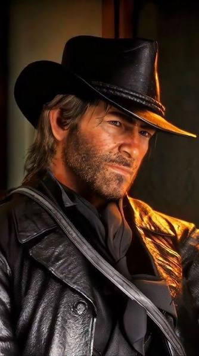
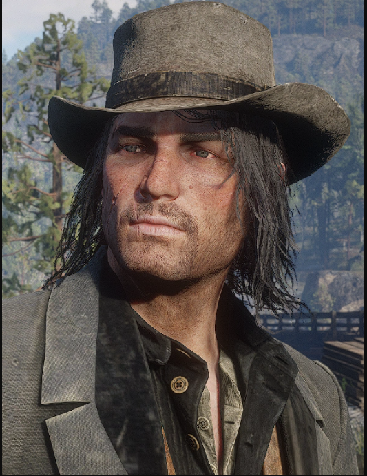
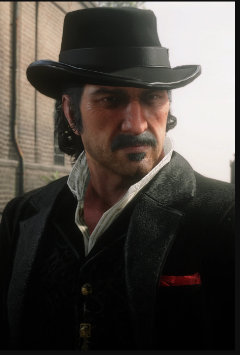
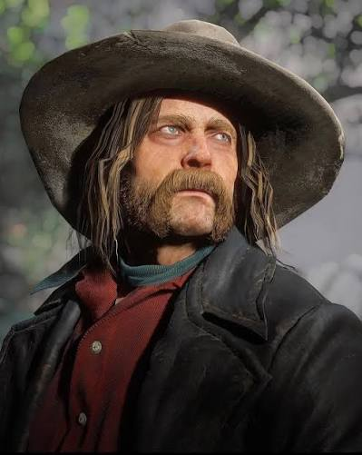
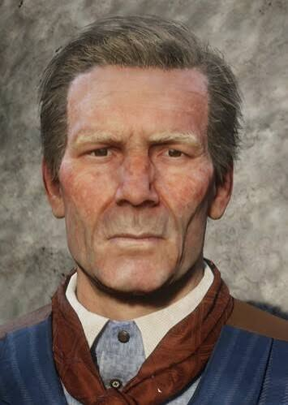
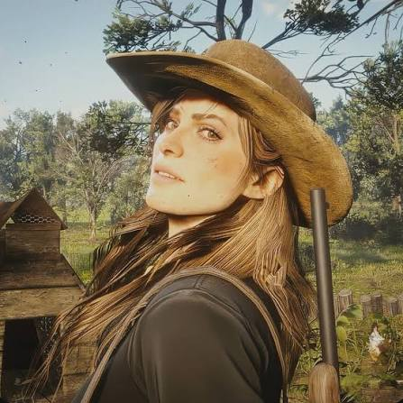
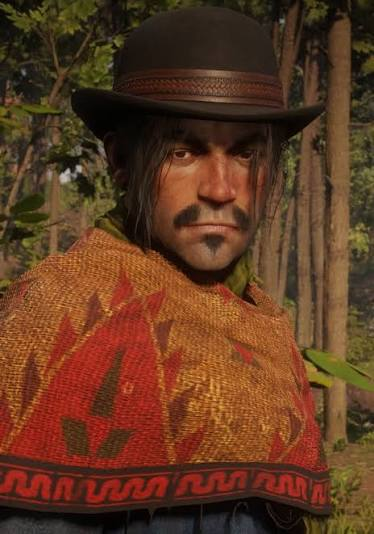
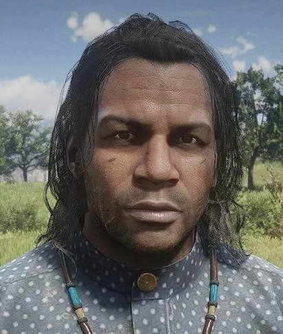

Red Dead Redemption apresenta uma grande variedade de personagens
que ajudam a construir a história e o universo do Velho Oeste.
Cada personagem possui sua própria personalidade, objetivos,
relações e acontecimentos que influenciam o desenvolvimento da
narrativa.
Entre os personagens mais importantes está Arthur Morgan, membro
da gangue Van der Linde e protagonista de Red Dead Redemption 2.
Ao longo da história, Arthur enfrenta conflitos, perigos e
acontecimentos que fazem com que ele questione suas escolhas e
sua relação com a gangue.
Outros personagens, como John Marston, Dutch van der Linde,
Micah Bell, Hosea Matthews, Sadie Adler, Javier Escuella e
Charles Smith, também possuem papéis importantes na história.
Suas diferentes personalidades e relações com Arthur ajudam a
desenvolver os acontecimentos da gangue e mostram diferentes
lados da vida no Velho Oeste.
Juntos, esses personagens tornam o universo de Red Dead Redemption
mais complexo e ajudam a contar uma história marcada por amizade,
lealdade, conflitos, escolhas e mudanças.
Voltar
Próxima página







